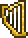

Magical Harp
| Magical Harp | |
|---|---|
|  | |
| Statistics | |
| Type | Weapon |
| Damage | 30 |
| Max stack | 1 |
| Mana | 4 |
| Shoot speed | 4.5 |
| Rarity | 5 |
| Use time | 11 (Very Fast) |
| Sell | 5 |
The Magical Harp is a magic weapon that deals damage by emitting musical notes. It plays varying sounds where the pitch becomes higher as it gets farther from the cursor. Additionally, the proximity of the cursor to the harp determines the speed at which the notes travel. When the cursor is farther from the harp, the notes travel faster whereas they travel slower when the cursor is closer. The notes are piercing and will pass through multiple enemies. Being able to bounce off walls allows it to be effectively used in small spaces like tunnels. Notes last for 6 seconds.
Having no knockback, like the drills, it cannot be reforged with Mythical or other prefixes that increase knockback.
Crafting
Recipe
| Crafting Station | ||
|---|---|---|
| Ingredient(s) | Amount | |
| Crystal Shard | 25 | |
| Soul of Sight | 20 | |
| Gold Bar | 15 | |
| Soul of Night | 15 | |
| Harp | 1 | |
| Result | ||
| Magical Harp | 1 | |
Notes
- The harp's sprite is always shown while equipped, similar to items such as the Breathing Reed.
History
- 1.1: Introduced.
- Early mentions: Terraria 1.1 Trailer 25th November 2011